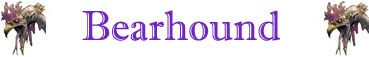
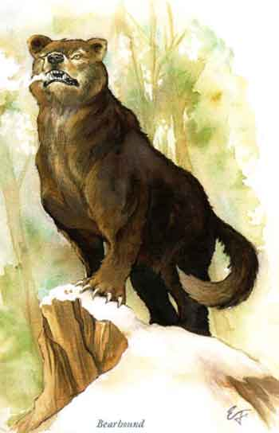

|
 |
Ambiente/Habitat | Foreste Temperate |
| Frequenza | Molto Rara | |
| Organizzazione | Solitary | |
| Periodo di Attività | Any | |
| Dieta | Carnivore | |
| Intelligenza | Low Intelligence (5-7) | |
| Punti Combattimento | 10 punti combattimento | |
| Tesoro | Vedi Sotto | |
| Allineamento Dominante | Neutral | |
| Numero di Apparizione | 1 | |
| Classe Armatura | 4 [10 base, 3 corazza, 1 destrezza] | |
| Movimento | 9 esagoni | |
| Dadi Vita | 7 (+7 punti ferita) | |
| Thac0 | 13 | |
| Numero di Attacchi | Artiglio/Artiglio/Morso | |
| Danni | 1d6+2 (taglio)/1d6+2 (taglio)/1d8+4 (taglio) | |
| Poteri Offensivi | Istinto
Predatorio; Scatto Muscolare; Stretta per Divorare |
|
| Poteri Difensivi | Resistenza alla Morte; Robustezza Superiore (+7 punti ferita); Resistenza Minore al Freddo |
|
| Poteri Generici | Impronte Nascoste in Foresta | |
| Vulnerabilità | Nessuna | |
| Resistenza alla Magia | 15% | |
| Sensi | Vista Comune, Sensi Superiori | |
| Dimensioni | Large (3 m. altezza) | |
| Morale | Champion (16) | |
| Valore in Punti Esperienza | 1500 |
|
TIRI SALVEZZA DELLA CREATURA |
|||||||
| CORAGGIO | ENERGIA VITALE | MAGIA* | MALATTIA | MENTE | RIFLESSI | ROBUSTEZZA | VELENO |
| 0 | 0 | +10% | 0 | 0 | 0 | +5% | 0 |
| 42 | 47 | 47 | 41 | 55 | 49 | 39 | 38 |
Descrizione
Il Bearhound è un cacciatore intelligente ed abile. Può essere facilmente scambiato per un comune orso bruno, ma un esperto potrà notare facilmente la massa muscolosa più sviluppata e la faccia più espressiva ed intelligente. Dotato di possenti artigli ed acuminate zanne, un tipico Bearhound è alto circa 2 metri alla spalla quando procede a quattro zampe e pesa oltre 800 chilogrammi.
Combat
Il Bearhound è un temibile avversario in combattimento, trattandosi di un orso in grado di combattere con incredibile aggressività. Questa creatura attacca i propri avversari in corpo a corpo con i propri artigli ed il proprio possente morso.
ISTINTO PREDATORIO (Moderate Special Ability): La creatura possiede un forte istinto predatorio, per tale motivo costei riceve un bonus costante di +1 ai suoi tiri per colpire.
SCATTO MUSCOLARE (Lesser Special Ability): In alcune occasioni, durante le battaglie, questa creatura può effettuare sorprendenti scatti muscolari velocizzando i propri attacchi. Quando, durante un combattimento, questa creatura effettua un tiro per l'iniziativa pari od inferiore a 2 costei potrà effettuare, unicamente contro uno degli avversari che stava precedentemente attaccando, un attacco extra, con il suo morso, alla fine del round in corso.
STRETTA PER DIVORARE (Lesser Special Ability): Questa creatura è in grado di utilizzare i propri artigli per stringere l'avversario e morderlo con ferocia. Qualora, infatti, questa creatura colpisce con entrambi gli artigli lo stesso avversario, lo terrà stretto e potrà morderlo con incredibile accuratezza. In particolare, l'attacco simultaneo di morso eventualmente effettuato contro il medesimo avversario riceverà un bonus di +4 al tiro per colpire e di +2 al dado base delle ferite.
ROBUSTEZZA SUPERIORE (Typical Ability): Il fisico della creatura è estremamente robusto. Ciò conferisce alla stessa una robustezza superiore che gli garantisce 7 punti ferita supplementari.
RESISTENZA ALLA MORTE (Valore pari a +7 punti ferita supplementari): Questa creatura è dotata di una incredibile forza di volontà. Per tale motivo, una volta raggiunto un valore di punti ferita pari od inferiore a 0 la stessa continuerà a combattere per 1d3+1 round prima di cadere al suolo senza vita (in questo periodo di tempo la creatura potrà anche essere regolarmente curata). Qualora, però, prima del decorso del suddetto termine di round la stessa raggiunga un ammontare negativo di punti ferita pari od inferiore a -10 questa sarà abbattuta immediatamente e definitivamente.
RESISTENZA MINORE AL FREDDO (Potere Tipico): La pelliccia del Bearhound è particolarmente resistente ai danni da freddo, per tale motivo il Bearhound ridurrà del 25% (per eccesso) tutti i danni da freddo sia di natura magica che naturale provocati nei suoi confronti.
IMPRONTE NASCOSTE IN FORESTA (Least Special Ability): Quando questa creatura si muove in una foresta la stessa è in grado di non lasciare tracce ed impronte in modo tale da rendere più difficoltosi i tentativi di rintracciala o di seguirla.
Habitat/Society
Nella grande maggioranza dei casi il Bearhound viaggia da solo nelle foreste in cerca di prede.
Ecology
Mystical Resource Sourge
(Zampa) Quantità: 1, Presenza 75% - Scuola di Magia:
Alteration
- Qualità della Risorsa: Common.
Mystical Resource Sourge
(Cuore) Quantità: 1, Presenza 33%
- Scuola di Magia: Enchantment
-
Qualità della Risorsa:
Uncommon.